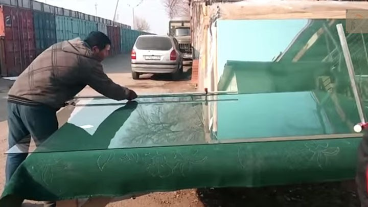

Kaca ialah salah satu material rumah yang pasti selalu ada, utamanya sebagai jendela. Namun, tak hanya keindahan tetapi juga keamanan bagi penghuni di dalamnya. Tidak halnya hadir bermacam-macam material kaca dan juga lantai yang kian melengkapi skor keindahan sebuah bangunan. Kini telah hadir banyak variasi kaca sampai lantai kayu jati yang dapat anda aplikasikan pada bangunan yang anda buat.
Tak kaca tempered, kaca shower, kanopi kaca, parket kayu jati dan masih banyak lagi. Segala material tersebut bisa di aplikasikan harga sebuah hunian tampak lebih cantik nyaman dan juga aman.
Distributor & Supplier Pintu Lipat Kaca Kepulauan Seribu
Kaca tempered juga bisa dipakai untuk pintu lipat kaca. Jadi, bahan ini tidak cuma untuk pintu saja. Pintu lipat kaca digunakan saat ruangan diaplikasikan untuk hal yang privacy. Anda bisa mencari contoh pintu lipat kaca tempered minimalis lainnya. Macam kaca nomor 6 ini benar-benar dianjurkan untuk diciptakan sebagai bahan membuat pintu lipat kaca.
Harga pintu kaca lipat Kepulauan Seribu frameless ini amat dipengaruhi oleh ukuran lebar dan tingginya pintu. Pastikan Anda memilih kaca tempered kualitas terbaik agar pintu lipat yang Anda pesan bisa diterapkan dalam kurun waktu yang betul-betul lama.
Distributor & Supplier Kaca Shower

Kaca shower yakni kotak atau alat yang berfungsi sebagai penyekat ruang khusus untuk kamar mandi. Salah satu metode yang dapat dipakai untuk menjadikan kamar mandi yang senantiasa bersih ialah mengaplikasikan shower karena metode pembersihannya memang jauh lebih praktis dibanding dengan yang mengaplikasikan konsep bak mandi. Kelebihan shower screen dibanding dengan sistem penyekatan yang lain yaitu dihasilkan dalam bentuk yang sudah jadi dan tinggal dipasang saja. Shower screen ialah kotak atau alat yang berfungsi sebagai penyekat ruang khusus untuk kamar mandi. Ada beberapa alasan mengapa Pintu Kaca Shower banyak diaplikasikan salah satunya merupakan kaca lebih terlihat bersih dan rapi dan juga lebih gampang dalam perawatannya. Di samping pintu kaca shower akan membuat kamar mandi kecil tampak lebih besar. Apalagi kini sudah ada kios penjual shower screen yang menjual produknya dalam cara satu paket termasuk pemasangannnya.
Disana anda bisa memperoleh kaca shower yang bermutu dan harga yang juga terjangkau. Tidak terbaik dan harga terjangkau.
Distributor, Supplier & Jasa Pasang Kanopi Kaca
Salah satu macam kanopi kaca yang dapat anda aplikasikan pada atap adalah atap kaca skylight yang ialah kanopi kaca dalam bentuk jendela horizontal atau kubah yang biasanya ditempatkan di atap bangunan yang memiliki maksud untuk pencahayaan ruangan. Diantaraya yaitu kaca tempered 8 mm, kaca tempered 10 mm clear, kaca tempered 12 mm clear, kaca laminated 12 mm clear, kaca laminated 5 mm + 5 mm clear non tempered kaca, kaca laminated 5 mm + 5 mm tempered clear dan masih banyak lagi. Harga dari setiap kaca yang ditawarkan cukup bermacam-macam tergantung kaca yang nanti akan diterapkan. Jadi telah tak heran lagi seluruh orang berkeinginan mencari harga yang benar-benar kompetitif untuk menyesuaikan budget atau anggaran mereka masing – masing untuk membikin produk canopy kaca. Disinilah letak perbedaan optis yang utama antara akrilik (acrylic) dengan kaca. Seandainya tembus pandang, kaca menyerap cahaya yang masuk sehingga kian tebal kaca maka kian sedikit sinar yang bisa melaluinya, maka sifat transparannya makin berkurang.|Di samping pintu kaca shower akan membikin kamar mandi kecil kelihatan lebih besar. Atap akrilik atau dapat juga disebut atap kaca acrylic ini banyak ditemukan di sebuah bangunan rumah, seperti ruko, apartemen, cafe, mall, sampai bangunan gedung.
Seiring dengan perkembangan dunia properti, sekarang kanopi kaca tempered sudah berkembang kencang mengikuti arsitektur modern. Disana anda bisa mendapatkan atap kanopi kaca dengan kwalitas terbaik dan harga relatif murah. Anda juga bisa memenfaatkan jasa pemasangan atap kanopi kaca dengan segala variasi kaca yang anda butuhkan yang sesuai dengan kriteria atap kanopi. Seandainya fungsi utama kanopi sebagai pelindung untuk bangunan tersebut, pemasangan kanopi kaca juga bisa membikin bangunan menjadi kelihatan lebih menawan dan menarik, apalagi memakai konsep yang sama dengan konsep rumah minimalis. Setelah kaca untuk atap kanopi cukup digemari. Tidak anda sedang mencari kanopi kaca, anda dapat langsung mengunjungi dis.or.id. Disana anda akan mendapat kanopi kaca yang cocok dengan bermacam ketebalan dan harga yang cukup terjangkau.
Jasa Maintenance Kaca
Kaca betul-betul membutuhkan perawatan karena setiap hari terkena cahaya matahari atau juga hujan. Tidak kaca tidak kusam, maka kaca semestinya dibersihkan secara regular. Selain cuma membersihkan kaca, jasa maintenance kaca juga bisa mengerjakan perbaikan. Membersihkan bagian kaca gedung Anda yang mungkin rusak, pecah, atau mengalami situasi sulit lainnya.
Tidak anda mebutuhkan jasa maintenance kaca, anda dapat mengunjungi dis.or.id. Untuk itu, alat-alat sepatutnya komplit sehingga kami cakap membersihkan segala sudut gedung. Dis.or.id memiliki semua kekuatan spesialis yang di rekrut hanya mereka yang profesional yang tahu persis bagaimana cara menerapkan alat dan bagaimana membersihkan kaca gedung bertingkat. Oleh sebab itu, dis.or.id hanya memilih orang-orang yang benar-benar profesional dan telah mempunyai pengalaman dalam hal maintenance kaca. Selain hanya dalam hal membersihkan kaca, mereka juga mampu mengerjakan pembetulan serta penggantian kaca yang mengalami kerusakan.
Jasa Pemasangan Kaca Tempered

Kian banyak orang yang mau mengaplikasikan kaca ini. Dengan pengerjaan pendinginan yang kencang membuat kaca memiliki kelenturan dan tenaga yang baik kepada tekanan di kedua sisi permukaan kaca. Banyak bagian properti yang bisa diciptakan dengan bahan berupa kaca tempered. Namun dulu hanya gedung perkantoran atau sentra perbelanjaan modern saja yang menggunakan variasi kaca ini, sekarang rumah hunian juga sudah dibangun dengan kaca tempered. Selain ini tidak lain karena semakin banyak orang yang memahami kwalitas serta keunggulan dari kaca tempered ini.
Salah satu variasi kaca yang sesuai untuk dipakai pada seluruh ragam bangunan maupun perindustrian merupakan kaca tempered, yakni yang paling aman sebab memiliki elastisitas lebih baik dibandingkan dengan kaca umumnya. Kini dari kaca tempered dapat mengurangi bahaya cedera ketika kaca pecah karena dikala terjadi sesuatu seperti kaca pecah maka kaca tempered akan terurai menjadi butiran kecil yang relatif lebih aman dari potongan pecahan kaca lazim. Disana anda dapat memanfaatkan jasa pemasangan kaca tempered untuk segala ragam bidang ataupun bangunan. Tak ketika ini anda sedang mau membangun suatu bangunan atau gedung, anda dapat memanfaatkan kaca tempered untuk dipakai lantas ke seluruh ragam bidang. Lebih dari itu, dis.or.id telah menyiapkan energi spesialis yang siap untuk menjalankan pemasangan, entah itu kaca tempered untuk kanopi, pintu, partisi, balkon, dan lain sebagainya.
Distributor & Supplier Pintu Kaca
Kini sudah tersedia beragam jenis dan beragam figur pintu kaca yang sedang menjadi tren ketika ini. Semakin banyak contoh pintu kaca saat ini seperti kaca tanpa bingkai atau frameless yang banyak dipakai untuk pintu perkantoran dan sentra perbelanjaan. Tersedia juga aluminium dan kayu bila Anda mau memiliki pintu kaca dengan frame. Mengenai modelnya, Anda bisa putuskan apakah berharap mempunyai pintu kaca desain lipat, geser, atau contoh yang lain. Desain hal yang demikian dapat disesuaikan dengan konsep properti Anda. beberapa jenis kaca yang paling sering digunakan untuk membikin pintu kaca, mulai dari macam kaca tempered hingga kaca non-tempered. Dalam hal ini, terdapat sebagian tipe kaca dengan kualitas yang terbaik. Kini paling banyak diminati dikala ini adalah kaca tempered sebab jauh lebih kuat dan bendung lama.
Dis.or id siap menolong anda untuk membuatkan pintu kaca idaman anda. Disana terdapat pelbagai variasi pintu kaca yang dapat anda jadikan pilihan.
Dis.or.id juga menyiapkan sebagian jenis kaca dengan ketebalan yang berbeda. Dis.or.id mempunyai energi yang sudah amat profesional di bidang ini.
Jual Kaca Cermin

Anda bisa memiliki pintu dengan bahan berupa kaca cermin. Jadi, hanya terlihat transparan dari satu sisi saja. Untuk membikin ruangan private, karenanya kaca ini transparan seandainya diamati dari dalam. Sementara itu, ketika diamati dari luar, kaca ini reflektif. Cermin minimalis mempunyai siku. Jikalau itu, sesekali cerminnya tidak ada piguranya atau yang sering kali disebut dengan kaca cermin frameless.
Sekiranya sebagai bahan untuk pintu kaca, kaca cermin ini juga masih dipakai sebagai aksesoris cermin. Dan bahan yang dipakai untuk membuat bingkai malahan berbeda-beda. Malah, ada juga furniture berupa pintu yang terbuat dari kaca cermin. Akan lebih menarik lagi sekiranya Anda memakai kaca cermin ini sebagai bahan utama furniture. Tetapi, Anda dapat memperhatikan orang lain dari dalam rumah. Melainkan kunjungi dan peroleh berita menarik mengenai kaca cermin cita-cita anda. Tak anda beratensi untuk mempunyai kaca cermin bagus sebagai pemanis ruangan atau sebagai pintu, anda dapat langsung mengunjungi dis.or.id.
Jasa Pemasangan Railing Kaca
Railing kaca dapat membuat rumah Anda begitu nampak minimalis. Lupakan bahan seperti kayu. Pastikan komponen tersebut terbuat dari bahan aluminum yang kuat. Dalam hal kaca, Anda dapat memilih kaca tempered. Malahan juga bahan yang diaplikasikan.
Ada banyak opsi jenis kaca yang bisa dipakai. Anda bisa memilih kaca tempered sebagai bahan utamanya. Ada kaca tempered yang sekarang diminati banyak orang. Kalau itu, seandainya terjadi bencana gempa bumi dan rupanya kaca pecah, kaca tempered ini akan pecah dan menyusun pecahan yang sungguh-sungguh kecil dan lembut. Bila kaca, perhatikan juga aluminum yang menjadi piguranya. Sekarang pasti, railing kaca ini menjadi opsi yang pas. Sekarang pasti, dengan railing ini, Anda tidak cuma membikin tangga dan balkon lebih aman, melainkan juga untuk memperindah tampilan interior rumah Anda.
Sekarang dis.or.id telah menyediakan railing kaca berkulitas dan berkualitas.
Jasa Pemasangan Kubikel Toilet
Jika anda mengininkan kamar mandi yang layaknya mall maupun hotel, ada bagusnya anda menggunakan kubikel toilet. Banyak keuntungan yang dapat didapatkan dengan menggunakan kubikel toilet seperti dapat membuat toilet kelihatan lebih bersih dan juga cuma memerlukan sedikit space.
Anda juga bisa membikin kamar kecil di space yang lebih kecil dan tak memerlukan lahan yang semacam itu besar untuk membikin kamar kecil yang banyak. Kaca juga bisa menjadi solusi keindahan kamar mandi, tapi juga dapat jadi masalah sekiranya Anda menggunakan material dan tempat yang salah. WC kubikel juga memberikan hal yang efisien dan tepat sasaran dalam pembagian space kamar mandi yang kecil.
Profit dari sekat kaca memberikan yaitu dapat memberikan efek luas sebab ruangan tersekat tapi secara visual tidak.
Tapi penggunaan kaca di kamar mandi dapat jadi dilema saat Anda meletakkannya dengan salah. Justru embun bisa menempel di kaca dan lambat laun bisa membikin kaca tak sejernih semula.
Distributor & Supplier Partisi Kaca
Partisi kaca telah tak lagi dianggap sebagai hal yang aneh lagi. ini disebabkan banyak keunggulan dari partisi modern ini. memang tarif pembuatan partisi ini jauh lebih murah. Anda menghitung sendiri berapa uang yang Anda siapkan untuk membeli bahan untuk partisi tembok. Dengan harga yang amat bersahabat pantas dengan kantong anda, Segera daripartisi kaca ini perlu diragukan lagi. Beberapa kunjungi dis.or.id sekarang juga. Anda bisa meniru mereka. Kecuali, Anda sepatutnya tahu ada desain yang berbeda. Ada partisi kaca frameless atau tanpa bingkai dan partisi dengan pigura. Kecuali, Anda seharusnya observasi kwalitas kaca yang digunakan. Apabila anda kesulitan untuk memasang dinding kaca penyekat, dis.or.id menyediakan jasa pemasangan dinding kaca penyekat untuk kamar mandi rumah anda.